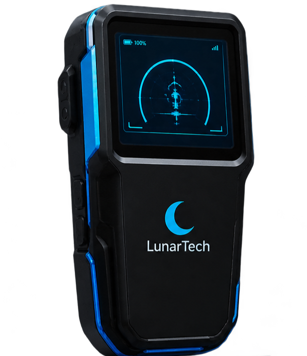

Projeto InovaWeek 2026
Escaneamento inteligente para um futuro mais seguro.
Conhecer a solução
Profissionais precisam perfurar paredes sem saber o que existe por trás delas, podendo atingir fiações, tubulações e estruturas.
A falta de informação pode transformar um simples furo em um grande prejuízo.
O Infrascan é um scanner portátil que detecta possíveis elementos ocultos em paredes, utilizando sensores e processamento eletrônico.
O resultado: mais segurança, menos riscos e decisões mais assertivas.
Mais segurança para os profissionais
Redução de custos com reparos e retrabalho
Agilidade nas obras e manutenções
Acesso à tecnologia sem precisar comprar o equipamento
O mercado de construção civil e manutenção está em constante expansão, aumentando a demanda por soluções preventivas e tecnológicas.
O cliente paga pelo serviço, não pelo equipamento.
Aprendizado: a precisão depende da calibração dos sensores e das características da parede.
| Preço do serviço | R$ 250 |
| Custo variável por atendimento | R$ 50 |
| Margem de contribuição | R$ 200 |
Valores estimados. Serão validados com os primeiros clientes.
Mais que um equipamento, é um serviço que gera valor.